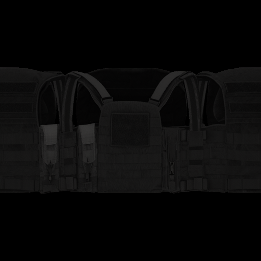
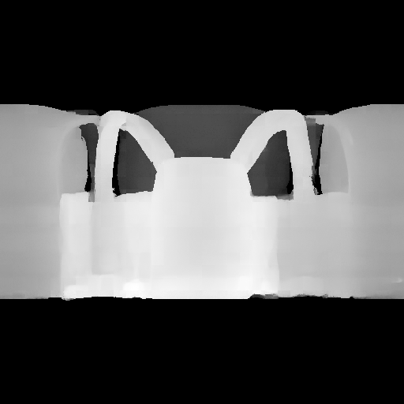

Comparison vs TRELLIS
Side-by-side comparison of InversEdit (ours) against Microsoft TRELLIS (text-xlarge) on the same 50 benchmark prompts. Both methods use the same text input and are rendered with identical dual-orbit camera paths.
3D Editing
Text-driven edits of generated objects, with the same model and no retraining (Flat RoPE · 60k). Local edits change colour and depth only inside a mask painted on the IPN texture.
Hole Completion
An IPN only sees the object along horizontal rays, so tops, bottoms and cavities are never observed. We render the generated mesh from views close to the IPN's own (±25°, then ±50°, then ±75°; 4 views per step), mask the pixels whose ray crosses space the IPN never saw, and fill them: a rough guess (a smooth surface spanning the hole) is refined by the base Modality Forcing model with partial noise, so it keeps the shape and viewing angle. Each fill becomes new surface for the next, steeper step. The generated mesh itself is not changed.
Drag to rotate. The two views are linked. Look from above and below to see the filled regions.
All 50 evaluation objects (no model; click one to inspect it above)
How it fills
The views that added the most surface, in processing order. Magenta: space the IPN never observed.
Training Data
Objaverse-XL assets, filtered by three curated lists and by how well an IPN can represent them.
1 · From Objaverse-XL to the training set
2 · IPN feasibility score how much of the object an IPN loses
8 cameras around the object
mesh rebuilt from its IPN, same cameras
blur σ = px, then colour error > τ =
bad ÷ foreground pixels
mean over the 8 views